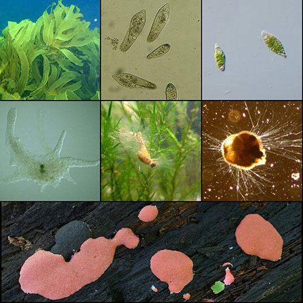

Reino Protista
Son organismos simples, microscópicos, predominantemente unicelulares, con núcleo celular (Eucariotas), que, dependiendo de las condiciones, pueden comportarse como plantas, realizando fotosíntesis, o como ingiriendo su alimento.